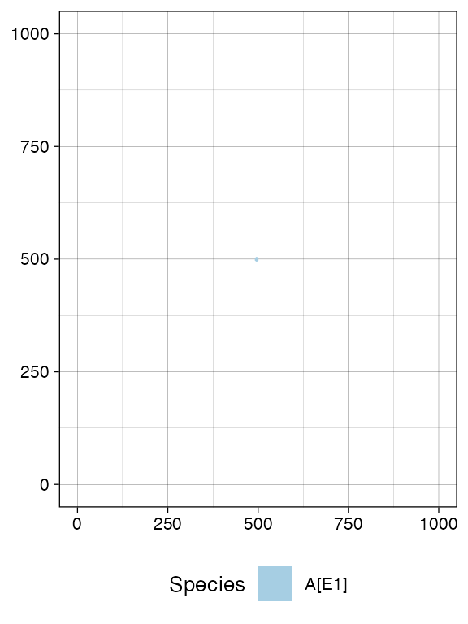
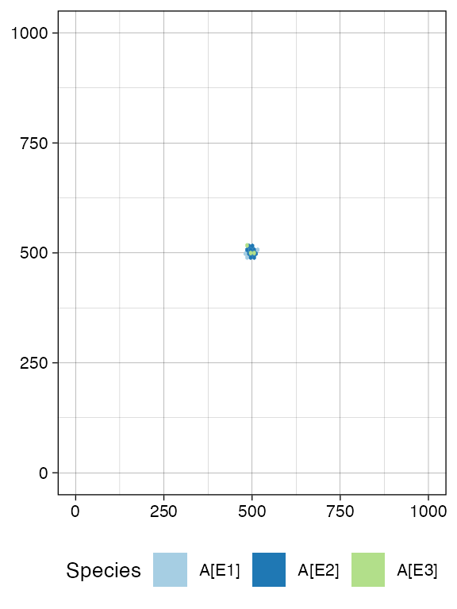
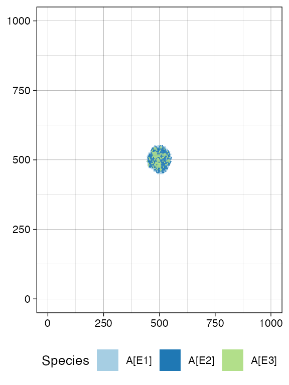
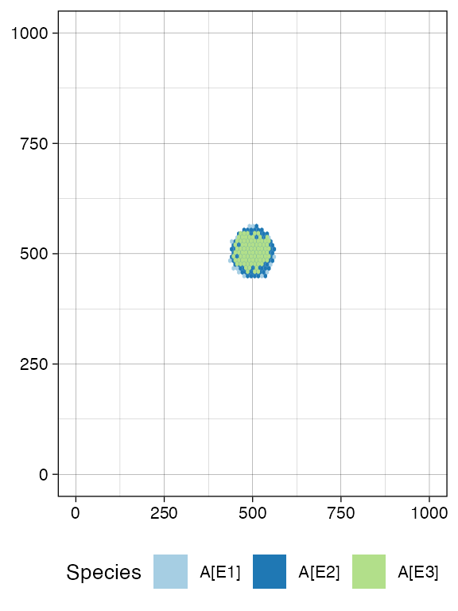
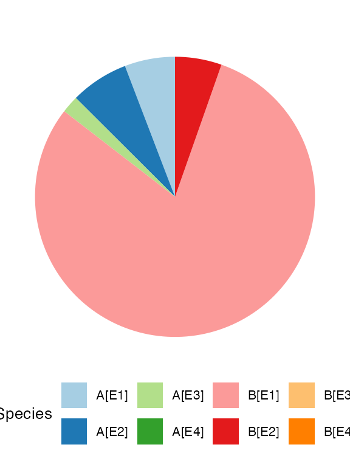
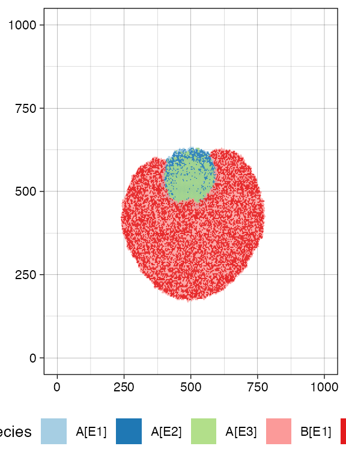
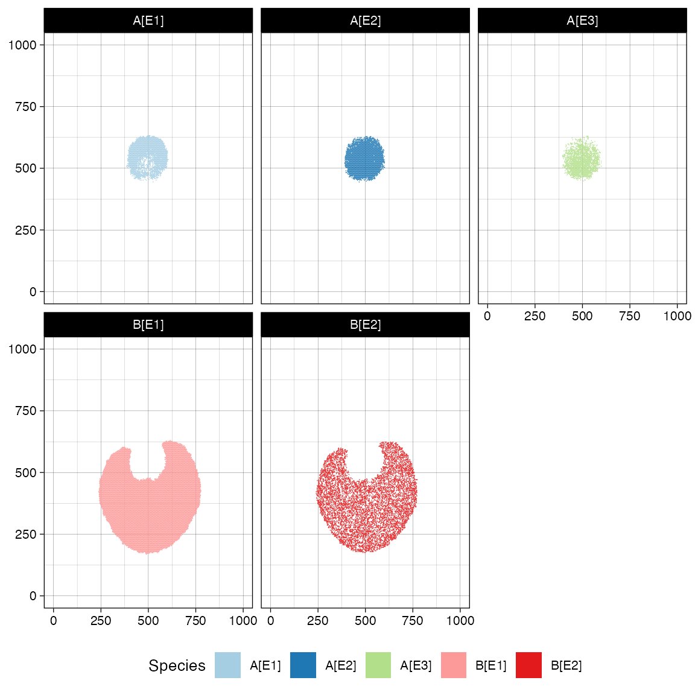
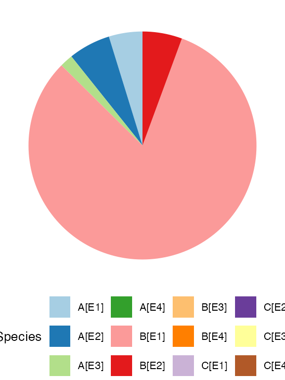
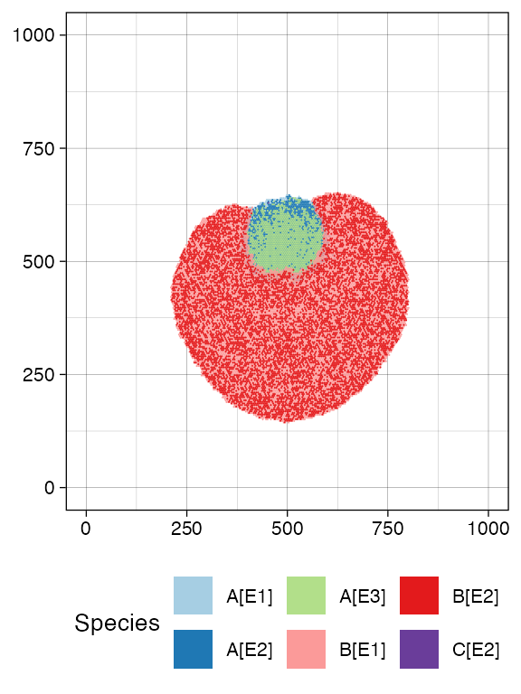

Disclaimer: ProCESS/CLONES implements probability distributions using the C++11 random number distribution classes. Since the standard does not specify the underlying algorithms, their implementations are left to the compiler. Consequently, the simulation output depends on the compiler used to build CLONES, and the results reported in this article may differ from those obtained by the reader.
The following steps are required to simulate a tissue.
creation of a tissue;
introduction of cells in the tissue;
actual simulation.
The simulation is managed by an object of the S4 class
TissueSimulation, which allows programming the tissue
evolution over time, adding new cells as the simulation progresses. The
state of the simulation and tissue can be visualised using
ggplot2-powered plots.
Tissue specification
To perform a simulation, a new object of class
TissueSimulation must be created.
library(ProCESS)
# default constructor
sim <- TissueSimulation()This automatically builds a 1000x1000-cells tissue - which can host
one million cells - and sets the name of the simulation to be
clones_<date>_<hour>.
A simulation custom name can be specified as it follows.
library(ProCESS)
# set the seed of the random number generator
set.seed(0)
# call your simulation "Test"
sim <- TissueSimulation("Test")The set.seed() call is not mandatory and can be omitted;
however, it is highly recommended to ensure the simulation
repeatability.
The optional Boolean parameter save_snapshots can be
used to save the simulation progress to the disk and recover it later.
By setting save_snapshots to TRUE, the
simulation progress os saved in a directory named after the
simulation.
# the progress of the simulation will be saved in the "Test" folder.
# If the directory "Test" already exists, an exception is raised.
sim <- TissueSimulation("Test", save_snapshots = TRUE)We can get information about any TissueSimulation object
by printing the corresponding variable.
sim
#> ── ProCESS D S M Test ─────────────────────────── ▣ [1000x1000] ⏱ 0 ──
#> ✖ The simulation has no samples yet!TissueSimulation objects expose methods to retrieve
specific information and control the modelled simulations.
# get the simulation directory, i.e., "Test"
sim$get_name()
#> [1] "Test"
# get the tissue size, i.e., c(1000,1000)
sim$get_tissue_size()
#> [1] 1000 1000Custom Tissue Sizes
The tissue size can be specified during simulation creation using the
parameters width and height.
# build a tissue simulation whose tissue has a width of 1200 and
# a height of 900
sim <- TissueSimulation("Test", width = 1200, height = 900)
# get the tissue size, i.e., c(1200,900)
sim$get_tissue_size()
#> [1] 1200 900Species specification
In order to simulate the evolution of some species, we need to add
them to sim. This process defines the evolutionary
parameters of the species.
A mutant is a set of cells having the same (potentially unknown) driver mutations. Cells in the same mutant can have different liveness rates due to different epigenetic states.
A species is a mutant with an optional epigenetic state. At
this point in the simulation, the mutant is just a name (A,
B, etc.) that could later be linked to mutations of
interest. The epigenomic state is a discrete feature of a species. This
is an abstraction that could represent a set of active/inactive states
linked to promoter methylations or, more broadly, a phenotype. The
evolution of mutants is non-reversible (no-back mutations model), while
the evolution among epigenetic states is potentially reversible.
For example, if we define a simulation with three epigenetic states
E1, E2, and E3 and two mutants
A and B, we have 6 distinct species:
A[E1], A[E2], A[E3],
B[E1], B[E2], and B[E3].
The tissue epigenetic states can be added either at the simulation
construction or by using the method TissueSimulation$add_epigenetic_states().
sim <- TissueSimulation(epigenetic_states = c("E1", "E2"))
# add two further epigenetic states
sim$add_epigenetic_states(c("E3", "E4"))
# get the simulation epigenetic states
sim$get_epigenetic_states()
#> epistate
#> 1 E1
#> 2 E2
#> 3 E3
#> 4 E4Evolutionary parameters
We use a notation common in linear birth-death processes. If a
simulation has no epigenetic states, then any mutant A has
exactly one species A and its the stochastic behaviour is
defined by the state-change rates
\begin{align} \text{(duplication)}\quad A & \rightarrow_{\lambda_{A}} 2 A \\ \text{(death)}\quad A & \rightarrow_{\delta_{A}} \emptyset \end{align}
where:
-
\lambda_{A}>0 is the cell
duplication rate in
A; -
\delta_{A}>0 is the cell death
rate in
A.
Instead, if the simulation has n
epigenetic states E_1, E_2,…, E_n,
then the species of the mutant A has n species denoted A[E_1], A[E_2], …, A[E_n], respectively. The stochastic
behaviour of the species A[E_i] is
defined by the state-change rates
\begin{align} \text{(duplication $E_i$)}\quad A[E_i] & \rightarrow_{\lambda_{A,i}} 2 A[E_i] \\ \text{(death $E_i$)}\quad A[E_i] & \rightarrow_{\delta_{A,i}} \emptyset \\ \text{(switch from $E_i$ to $E_1$)}\quad A[E_i] & \rightarrow_{\epsilon_{A,i,1}} A[E_1] + A[E_i] \\ &\vdots\\ \text{(switch from $Ei$ to $E_n$)}\quad A[Ei] & \rightarrow_{\epsilon_{A,i,n}} A[E_n] + A[E_i] \end{align}
where the rates \lambda_{A,i} and \delta_{A,i} are as above, and \epsilon_{A,i,j} is the rate at which cells of the species A[E_i] duplicate and let one of its progeny switch to A[E_j].
Let us add a mutant to the simulation with epigenetic states
E1, E2, E3, and E4
by using the method TissueSimulation$add_mutant().
sim$add_mutant("A", list(E1 = list(duplication = 0.2, death = 0.05,
E2 = 0.01),
E2 = list(duplication = 0.08, death = 0.01,
E1 = 0.01, E3 = 0.01),
E3 = list(duplication = 0.08, death = 0.01,
E2 = 0.01)))The first parameter of the method is the name of the mutant to be added. Instead, the second parameter of the method is a list of the rates to be set.
When the simulation has epigenetic states, the list must be a named
list of lists. Each name must be an epigenetic state, and the
corresponding list specifies the rates of the species. The names of this
second type of list must be among "duplication",
"death", or any epigenetic state, while the values
represent the rates. When the name of a value is an epigenetic state,
the value itself is the rate of an epigenetic switch from the current
state to the one specified by the rate names. All missing rates are set
to zero by default.
# get the simulation mutants
sim$get_mutants()
#> mutant
#> 1 A
# updated object (counts refer to number of cells of each species)
sim
#> ── ProCESS D S M ProCESS_20260702-181930 ──────── ▣ [1000x1000] ⏱ 0 ──
#>
#> ── Species: 4, with epigenetics
#>
#> ======= ==== ==== ====== ===
#> species λ δ counts %
#> ======= ==== ==== ====== ===
#> A[E1] 0.20 0.05 0 NaN
#> A[E2] 0.08 0.01 0 NaN
#> A[E3] 0.08 0.01 0 NaN
#> A[E4] 0.00 0.00 0 NaN
#> ======= ==== ==== ====== ===
#>
#> ── Epigenetic switches
#>
#> ======= ==== =====
#> species ε dest
#> ======= ==== =====
#> A[E1] 0.01 A[E2]
#> A[E2] 0.01 A[E1]
#> A[E2] 0.01 A[E3]
#> A[E3] 0.01 A[E2]
#> ======= ==== =====
#>
#> ── Firings: 0 total
#> ✖ The simulation has no samples yet!
# get the simulation rates that have been explicitly set
sim$get_rates()
#> mutant epistate event first.child.epistate rate
#> 1 A E1 death <NA> 0.05
#> 2 A E1 duplication E1 0.20
#> 3 A E1 switch E2 0.01
#> 4 A E2 death <NA> 0.01
#> 5 A E2 duplication E2 0.08
#> 6 A E2 switch E1 0.01
#> 7 A E2 switch E3 0.01
#> 8 A E3 death <NA> 0.01
#> 9 A E3 duplication E3 0.08
#> 10 A E3 switch E2 0.01
# to get also the rates that haven't been explicitly set
sim$get_rates(complete = TRUE)
#> mutant epistate event first.child.epistate rate
#> 1 A E1 duplication E1 0.20
#> 2 A E1 death <NA> 0.05
#> 3 A E1 switch E2 0.01
#> 4 A E1 switch E3 0.00
#> 5 A E1 switch E4 0.00
#> 6 A E2 duplication E2 0.08
#> 7 A E2 death <NA> 0.01
#> 8 A E2 switch E1 0.01
#> 9 A E2 switch E3 0.01
#> 10 A E2 switch E4 0.00
#> 11 A E3 duplication E3 0.08
#> 12 A E3 death <NA> 0.01
#> 13 A E3 switch E1 0.00
#> 14 A E3 switch E2 0.01
#> 15 A E3 switch E4 0.00
#> 16 A E4 duplication E4 0.00
#> 17 A E4 death <NA> 0.00
#> 18 A E4 switch E1 0.00
#> 19 A E4 switch E2 0.00
#> 20 A E4 switch E3 0.00When, instead, the simulation has not epigenetic states, the list
must be a list of rates with names among "duplication" and
"death". A mutant in a simulation without epigenetic states
could be added as
# not run
sim$add_mutant(name = "A", c(duplication = 0.2, death = 0.1))To be able to simulate the model, an initial cell needs to be displaced in the tissue.
# add one cell of species A[E1] (mutant A in epi-state E1) in
# position (500, 500).
sim$place_cell("A[E1]", 500, 500)Visualisations
We can query the current state of the simulation and extract the position of each cell in the tissue.
# counts per species
sim$get_counts()
#> mutant epistate counts overall
#> 1 A E1 1 1
#> 2 A E2 0 0
#> 3 A E3 0 0
#> 4 A E4 0 0
# cells position (one so far)
sim$get_cells()
#> cell_id mutant epistate position_x position_y
#> 1 1 A E1 500 500This information can be plotted. Note that the tissue visualisation uses hexagonal bins to avoid plotting delays when the simulation uses thousands of cells.
# pie-chart for counts
plot_state(sim)
# spatial distribution for the whole tissue (hexagonal bins)
plot_tissue(sim)
Note: since the plots are done with
ggplot2they can be assembled and customised.
Species Evolution
There are 4 ways to let the simulation evolve:
- advancing until the number of cells in a species reaches a given threshold \theta > 0;
- advancing until a new time t>0 is reached;
- advancing until a desired number of firings (of one particular event) has occurred;
- advancing until a formula is not satisfied by the simulation status (advanced topic; see this article).
Size-Based Simulation
We can run the simulation up to when we have \theta > 0; cells of species
A[E1]
# counts per species is now 0
sim$get_counts()
#> mutant epistate counts overall
#> 1 A E1 1 1
#> 2 A E2 0 0
#> 3 A E3 0 0
#> 4 A E4 0 0
# run the simulation until the species "A[E1]" contains less than 500 cells
sim$run_up_to_size("A[E1]", 500)
#> [████████████████████████████████████████] 100% [00m:00s] Saving snapshot
# counts per species now reports 500 for A[E1]
sim$get_counts()
#> mutant epistate counts overall
#> 1 A E1 500 1674
#> 2 A E2 70 149
#> 3 A E3 3 3
#> 4 A E4 0 0
plot_tissue(sim)
Firing-Based Simulation
The number of times each event has fired is accessible
# get the number of fired event per species
sim$get_firings()
#> event mutant epistate fired
#> 1 deaths A E1 311
#> 2 duplications A E1 832
#> 3 switches A E1 31
#> 4 deaths A E2 8
#> 5 duplications A E2 59
#> 6 switches A E2 12
#> 7 deaths A E3 0
#> 8 duplications A E3 0
#> 9 switches A E3 0
#> 10 deaths A E4 0
#> 11 duplications A E4 0
#> 12 switches A E4 0A small number of cell deaths have occurred in species
A[E2] up to this point, so we can simulate the system until
there are 500 of them.
sim$run_up_to_event("death", "A[E2]", 500)
#> [████████████████████████████████████████] 100% [00m:00s] Saving snapshot
# the row "death", for "A[E2]" now reports 1000
sim$get_firings()
#> event mutant epistate fired
#> 1 deaths A E1 10872
#> 2 duplications A E1 16991
#> 3 switches A E1 782
#> 4 deaths A E2 500
#> 5 duplications A E2 1599
#> 6 switches A E2 345
#> 7 deaths A E3 73
#> 8 duplications A E3 239
#> 9 switches A E3 22
#> 10 deaths A E4 0
#> 11 duplications A E4 0
#> 12 switches A E4 0
# plot the tissue by using 200 bins
plot_tissue(sim, num_of_bins = 200)
Clock-Based Simulation
It is also possible to take the current simulation clock as a reference, and simulate further.
# get the simulation clock
sim$get_clock()
#> [1] 129.8461
# run the simulation for other 15 time units
sim$run_up_to_time(sim$get_clock() + 15)
#> [████████████████████████████████████████] 100% [00m:00s] Saving snapshot
# get again the simulation clock
sim$get_clock()
#> [1] 144.8524
plot_tissue(sim)
Getting Cells (Advanced)
At this point, if we query the simulation, we will find more cells
(we use dplyr to ease result processing). For convenience,
the getters accept parameters to subset the tissue.
# load the package dplyr
library(dplyr)
# get the cells in the tissue at current simulation time
sim$get_cells() %>% head()
#> cell_id mutant epistate position_x position_y
#> 1 51445 A E1 439 484
#> 2 45600 A E2 439 491
#> 3 51569 A E1 439 494
#> 4 46763 A E1 439 510
#> 5 51475 A E1 440 485
#> 6 50007 A E1 440 490
# get the cells in the tissue rectangular sample having
# [500,500] and [505,505] as lower and upper corners, respectively
sim$get_cells(c(500, 500), c(505, 505)) %>% head()
#> cell_id mutant epistate position_x position_y
#> 1 18123 A E2 500 500
#> 2 31423 A E1 500 501
#> 3 42122 A E1 500 502
#> 4 45359 A E1 500 503
#> 5 44731 A E1 500 504
#> 6 47182 A E2 500 505
# get the cells in the tissue having epigenetic state "E2"
sim$get_cells(c("A", "B"), c("E2")) %>% head()
#> cell_id mutant epistate position_x position_y
#> 1 45600 A E2 439 491
#> 2 49911 A E2 442 491
#> 3 40224 A E2 442 508
#> 4 47546 A E2 442 510
#> 5 47763 A E2 442 511
#> 6 47547 A E2 442 512
# get the cells in the tissue having epigenetic state "E2" and,
# at the same time, belonging to rectangular sample bounded by
# [500,500] and [505,505] as lower and upper corners, respectively
sim$get_cells(c(500, 500), c(505, 505), c("A", "B"), c("E2")) %>% head()
#> cell_id mutant epistate position_x position_y
#> 1 18123 A E2 500 500
#> 2 47182 A E2 500 505
#> 3 47183 A E2 501 504
#> 4 26432 A E2 502 503
#> 5 43564 A E2 502 504
#> 6 41629 A E2 503 502Evolving new species
ProCESS can select cells from the tissue randomly for each mutant, or within a constrained tissue area.
# random sampling from the whole tissue: it returns a cell having "A" as mutant
sim$choose_cell_in("A")
#> cell_id mutant epistate position_x position_y
#> 1 29584 A E1 490 514
# calling it again may result in a different cell
sim$choose_cell_in("A")
#> cell_id mutant epistate position_x position_y
#> 1 35055 A E1 512 532
# it can also sample among the cells of a particular species
sim$choose_cell_in("A[E2]")
#> cell_id mutant epistate position_x position_y
#> 1 35600 A E2 504 550
# ... or multiple species/mutant
sim$choose_cell_in(c("A[E2]", "A[E3]"))
#> cell_id mutant epistate position_x position_y
#> 1 38021 A E2 496 505
# constrain sampling in the tissue rectangular selection [500,550]x[350,450]
sim$choose_cell_in("A", c(500, 350), c(550, 450))
#> cell_id mutant epistate position_x position_y
#> 1 49063 A E1 514 447It is also possible to constrain the selection to the cells being neighbors of wild-type cells.
# random sampling from the tumour border
sim$choose_border_cell_in("A")
#> cell_id mutant epistate position_x position_y
#> 1 48779 A E1 457 461
# constrain sampling to rectangular selection [500,550]x[350,450]
sim$choose_border_cell_in(c("A[E2]", "A[E3]"), c(500, 350), c(550, 450))
#> cell_id mutant epistate position_x position_y
#> 1 48060 A E2 519 450Choosing border cells is important when the border-driver growth model is adopted (this is the default option). See this article for more details.
The ability to select a cell can be used to program the generation of new species, mimicking new mutants that generate subclonal expansions.
Imagine we want to add a new mutant B with epi-states –
and therefore new species B[E1], B[E2],
B[E3], and B[E4] – as descending from
A, we need to:
locate one cell of mutant
Ain the tissue, which is where we will inject the new mutant;add the specifics of mutant
B(viaTissueSimulation$add_mutant(), as we did forA);implement the change of the cell of mutant
Ato a cell of mutantB.
# choose a border cell with mutant "A"
cell <- sim$choose_border_cell_in("A")
cell
#> cell_id mutant epistate position_x position_y
#> 1 49191 A E1 504 446
# add mutant "B"
sim$add_mutant("B", list(E1 = list(duplication = 0.7, death = 0.05,
E2 = 0.05),
E2 = list(duplication = 0.3, death = 0.1,
E1 = 0.05),
E3 = list(death = 0.1, E2 = 0.05)))Then we inject the cell, and let the simulation evolve until the
number of the cells in the species B[E2] is less than
10000.
# mutate one of the children of `cell` into the species "B"
sim$mutate_progeny(cell, "B")
# generated event A -> B either in any of the added epi-states
sim$get_counts()
#> mutant epistate counts overall
#> 1 A E1 7056 53922
#> 2 A E2 2111 7807
#> 3 A E3 395 1258
#> 4 A E4 0 0
#> 5 B E1 1 1
#> 6 B E2 0 0
#> 7 B E3 0 0
#> 8 B E4 0 0
# evolve the simulation until "B[E2]" consists of less than 1e4 cells
sim$run_up_to_size("B[E2]", 10000)
#> [█████-----------------------------------] 12% [00m:00s] Cells: 37364 [██████████------------------------------] 24% [00m:00s] Cells: 59241 [███████████████-------------------------] 36% [00m:01s] Cells: 77655 [███████████████████---------------------] 46% [00m:02s] Cells: 93129 [██████████████████████------------------] 52% [00m:03s] Cells: 107279 [█████████████████████████---------------] 61% [00m:04s] Cells: 120289 [████████████████████████████------------] 68% [00m:05s] Cells: 132432 [██████████████████████████████----------] 74% [00m:06s] Cells: 143759 [█████████████████████████████████-------] 80% [00m:07s] Cells: 154206 [███████████████████████████████████-----] 86% [00m:08s] Cells: 164248 [█████████████████████████████████████---] 92% [00m:09s] Cells: 172897 [███████████████████████████████████████-] 97% [00m:10s] Cells: 181284 [████████████████████████████████████████] 100% [00m:11s] Saving snapshotAt this point, we can inspect the tissue in more detail. It can help to face the species to clearly appreciate the spatial diffusion of the populations.
plot_state(sim)
plot_tissue(sim, num_of_bins = 250)
plot_tissue(sim, num_of_bins = 250) + ggplot2::facet_wrap(~species)
If, at this point in the simulation, we generate a new mutant
C from A in the rectangle [450,500]\times [550, 650].
# define evolutionary parameters
sim$add_mutant("C", list(E1 = list(duplication = 0.2, death = 0.1,
E2 = 0.1),
E2 = list(duplication = 0.4, death = 0.01,
E1 = 0.1)))
# choose a border cell in A[E1] or A[E2] in the rectangle [450,500]x[550,650]
cell <- sim$choose_border_cell_in(c("A[E1]", "A[E2]"),
c(450, 550), c(500, 650))
sim$mutate_progeny(cell, "C")
sim$run_up_to_time(sim$get_clock() + 7)
#> [███████████████████████████████████████-] 97% [00m:00s] Cells: 205171 [████████████████████████████████████████] 98% [00m:00s] Cells: 213475 [████████████████████████████████████████] 99% [00m:01s] Cells: 219673 [████████████████████████████████████████] 99% [00m:02s] Cells: 226076 [████████████████████████████████████████] 100% [00m:03s] Saving snapshot
plot_state(sim)
plot_tissue(sim, num_of_bins = 250)
Other Operations
Injection of Cells into a Tissue
In the tissue, we can manually inject multiple cells; all injected cells can be retrieved.
# now it will return just the initial cell
sim$get_added_cells()
#> mutant epistate position_x position_y time
#> 1 A E1 500 500 0Avoiding Drift
Any species with a non-zero death rate can become extinct due to drift.
Drift makes it difficult to simulate and be confident about what species are in the model. To facilitate the user, CLONES can avoid drift by setting a death activation level. This value is the minimum number of cells that enables cell death in a species: a cell of species S can die if and only if S has reached the death activation level at least once during the simulation.
This threshold applies to all species and is set to 1 by default.
sim$death_activation_level
#> [1] 1
# change death activation level
sim$death_activation_level <- 50